授業も、ゼミも、試験も。ノートひとつで。
書いたノートが、そのまま試験勉強の教材になる。
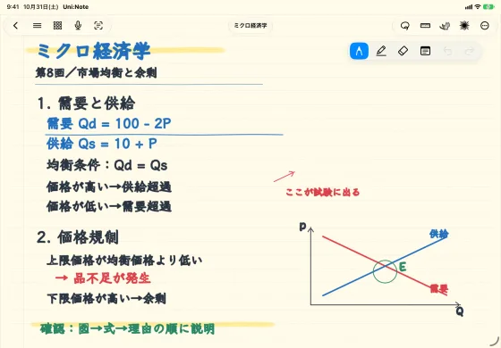
人物像経済学部2年。iPadとApple Pencilで授業を受け、週1回のゼミで発表がある。
- 8:10通学中
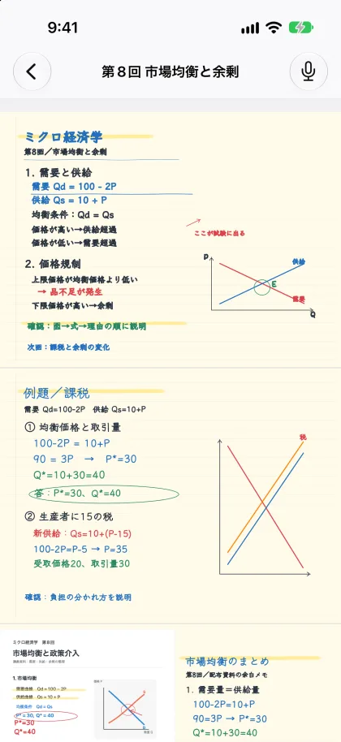
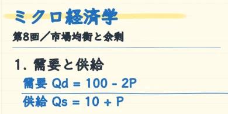
- 10:402限
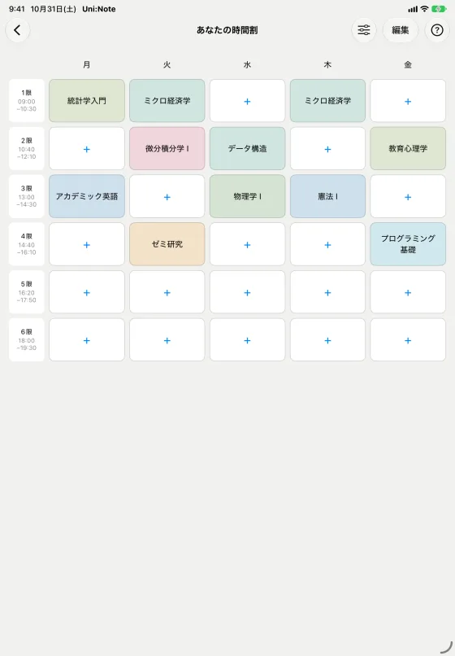
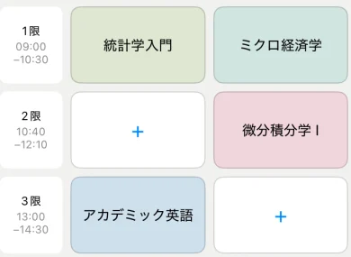
- 10:45授業中
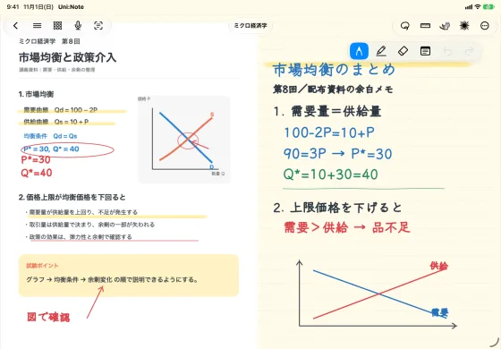
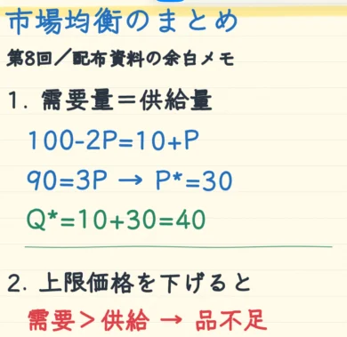
- 12:20昼休み
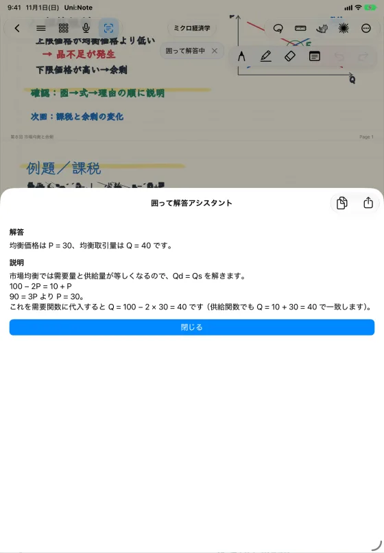
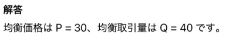
- 16:30放課後
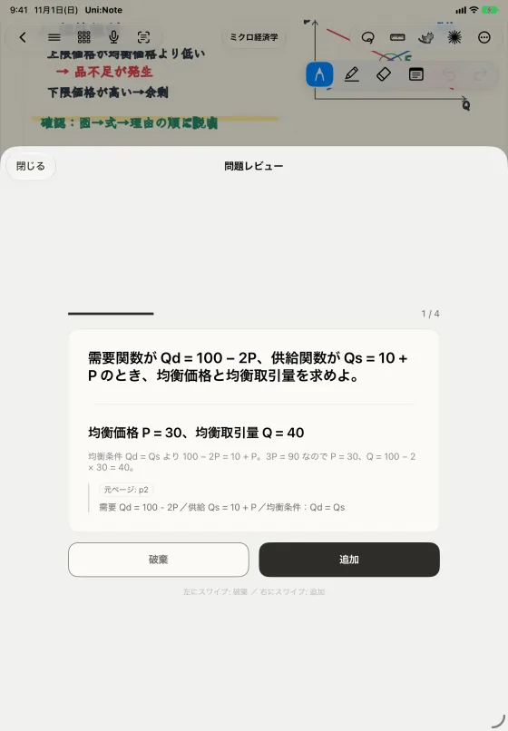
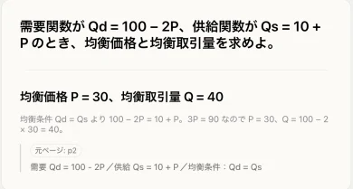
- 水曜ゼミの前
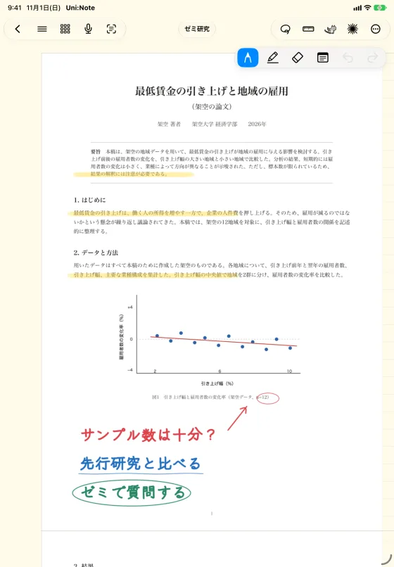
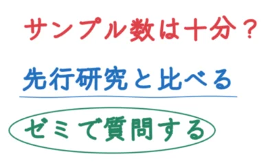
- 水曜ゼミ発表
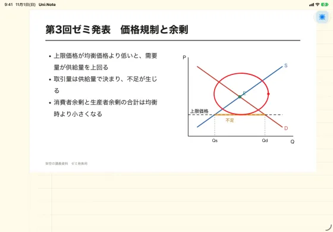
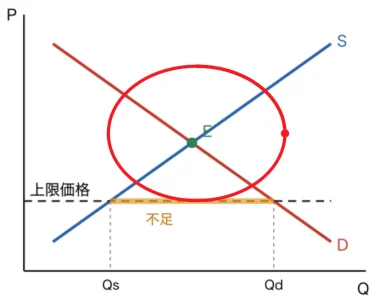
- 試験2週間前
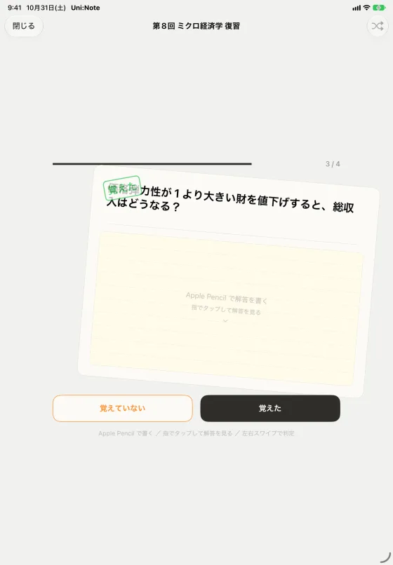
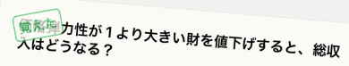
- 試験前日
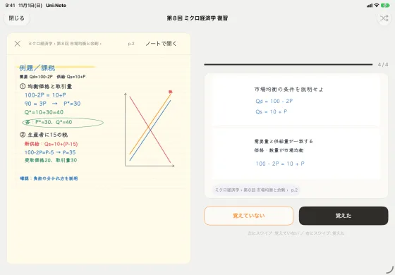
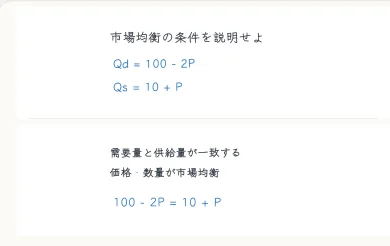
おすすめ設定
| 設定の場所 | 設定項目 | おすすめ |
|---|---|---|
| 設定 › 表示設定 | 本棚の項目の呼び方 | 教科 |
| 設定 › 学習支援 | ホームに時間割を表示 | オン |
| 設定 › 学習支援 | ホームに問題集を表示 | オン |
| 設定 › 表示設定 | 起動時に開く画面 | 時間割からノートを開く |
| 設定 › ノート設定 | 新規ノートテンプレート | 横罫 |
設定はいつでも戻せます。
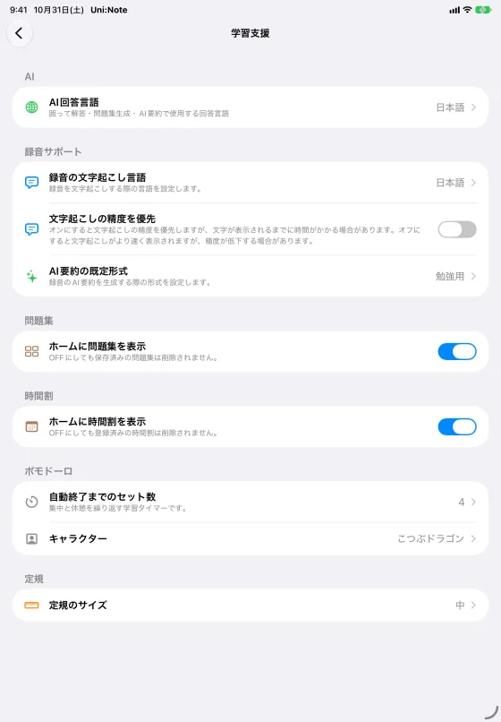
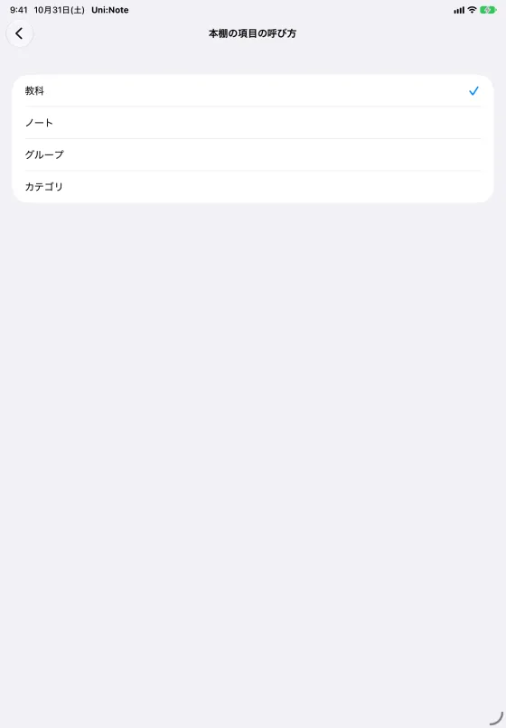
- 録音はPremium／Premium Plusで利用できます。AI要約はAI残量を使用します。
- 文字起こしとAI要約は、対応する端末・環境で利用できます。